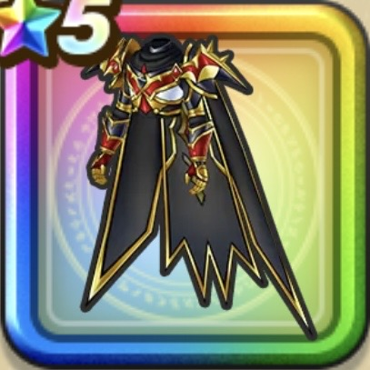

調停者のよろい上
攻略班 10点 / ドルマ属性耐性+5%ヒャド属性耐性+5%ドルマ属性耐性+5%イオ属性耐性+5%スキルの斬撃ダメージ+10%スキルの会心ダメージ+7%ドッペル系へのダメージ+2%会心率+5%
くわしい特徴
【レベル別習得スキル】 Lv1ドルマ属性耐性+5% Lv8ヒャド属性耐性+5% Lv10スキルの斬撃ダメージ+10% Lv12会心率+5% Lv15スキルの会心ダメージ+7% Lv18ドッペル系へのダメージ+2% Lv20ドルマ属性耐性+5% Lv23すばやさ+7 Lv25イオ属性耐性+5% 【限界突破スキル】 1凸攻撃力+12 2凸すばやさ+12 3凸守備力+12 4凸さいだいHP+12